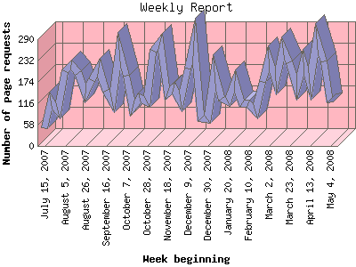

Analog 5.31
Analog 5.31 Report Magic 2.16
Report Magic 2.16The Weekly Report identifies the activity for each week within the report
time frame. Remember that one page hit can result in several server requests
as the images for each page are loaded.
Note: Depending on the
report time frame for this report the first and last week may not represent
a full seven day week, resulting in lower hits.

| Week beginning | Number of page requests | Percentage of the bytes | |
|---|---|---|---|
| 1. | July 15, 2007 | 48 | 1.03% |
| 2. | July 22, 2007 | 124 | 1.62% |
| 3. | July 29, 2007 | 97 | 0.69% |
| 4. | August 5, 2007 | 202 | 3.56% |
| 5. | August 12, 2007 | 221 | 2.49% |
| 6. | August 19, 2007 | 199 | 2.08% |
| 7. | August 26, 2007 | 142 | 4.79% |
| 8. | September 2, 2007 | 179 | 2.20% |
| 9. | September 9, 2007 | 213 | 3.01% |
| 10. | September 16, 2007 | 150 | 3.80% |
| 11. | September 23, 2007 | 122 | 1.74% |
| 12. | September 30, 2007 | 261 | 3.19% |
| 13. | October 7, 2007 | 192 | 1.76% |
| 14. | October 14, 2007 | 104 | 1.42% |
| 15. | October 21, 2007 | 130 | 1.27% |
| 16. | October 28, 2007 | 121 | 1.22% |
| 17. | November 4, 2007 | 259 | 4.19% |
| 18. | November 11, 2007 | 283 | 2.92% |
| 19. | November 18, 2007 | 142 | 5.54% |
| 20. | November 25, 2007 | 156 | 2.79% |
| 21. | December 2, 2007 | 121 | 2.41% |
| 22. | December 9, 2007 | 210 | 0.51% |
| 23. | December 16, 2007 | 286 | 1.33% |
| 24. | December 23, 2007 | 75 | 2.00% |
| 25. | December 30, 2007 | 73 | 2.26% |
| 26. | January 6, 2008 | 200 | 1.13% |
| 27. | January 13, 2008 | 129 | 1.57% |
| 28. | January 20, 2008 | 120 | 1.72% |
| 29. | January 27, 2008 | 177 | 1.96% |
| 30. | February 3, 2008 | 115 | 1.32% |
| 31. | February 10, 2008 | 115 | 1.27% |
| 32. | February 17, 2008 | 95 | 1.52% |
| 33. | February 24, 2008 | 174 | 4.07% |
| 34. | March 2, 2008 | 237 | 3.70% |
| 35. | March 9, 2008 | 176 | 3.65% |
| 36. | March 16, 2008 | 267 | 3.93% |
| 37. | March 23, 2008 | 227 | 3.34% |
| 38. | March 30, 2008 | 160 | 1.21% |
| 39. | April 6, 2008 | 227 | 3.63% |
| 40. | April 13, 2008 | 170 | 1.71% |
| 41. | April 20, 2008 | 289 | 2.34% |
| 42. | April 27, 2008 | 230 | 1.31% |
| 43. | May 4, 2008 | 119 | 0.81% |
Most active week beginning April 20, 2008 : 289 pages sent.
Weekly average: 170 pages sent.
This report was generated on May 6, 2008 05:30.
Report time frame July 18, 2007 21:56 to May 5, 2008 23:59.
| Web statistics report produced by: | |
| Analog 5.31 | Report Magic 2.16 |